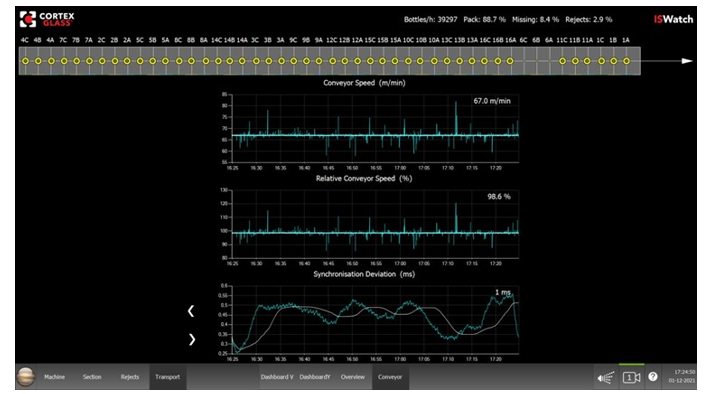
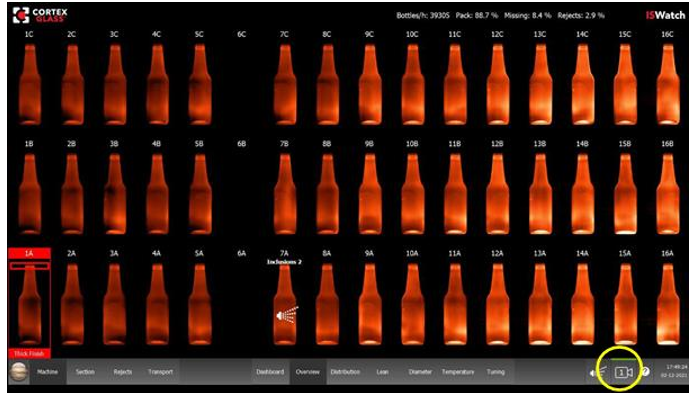

Basic Layout of the Information Screens
CTX-OP-021B
Revised: 2023-05-22
Purpose/Application
Defines the how to navigate and use basic information screens.
PPE Required
Bump cap, safety glasses, hearing protection, long sleeves, safety-toed shoes, gloves. Where applicable, wear appropriate and serviceable Fire Retardant / Flame Resistant clothing (FR).
Safety Hazards
Safety Controls
Review the Emergency Action Plan before performing work.
Equipment Needed
Access to the ISWatch HMI / operator screen.
Comments
- Read a section thoroughly before starting the work. Personnel performing these tasks must have completed the required training.
- For additional information, refer to:
- CTX-ET-021 Troubleshooting the ISWatch System
- CTX-MR-021 ISWatch Maintenance
- CTX-SU-021 ISWatch Job Change and Job Setup
- CTX-SU-022 Setting the ISWatch Alarms and Rejects
- Vendor manual in the Resources library
Basic Layout for the Information Screens
Top Bar: Shows the bottles counted per hour, and the percentage of pack, missing bottles, and rejects.
Bottom Bar: The buttons are described from left to right:
Press the “Jupiter” button to view the Start / Main menu. (See Section 4.) The Start / Main menu provides access for logging into the system.
- Machine screen is used to access diagnostics, and to shut down and start up the computer. (See Section 4.5.)
- Section screen displays information for a specific section. (See Section 3.)
- Rejects screen (Section 2.1) shows the last rejects and reject statistics.
- Transport screen (Section 2.2) opens graphs showing container information while the containers are on the conveyor.
- Dashboard screen displays alarms (Section 2.3).
- Overview screen shows all warnings, alarms, and rejects (Section 2.4).
- Distribution screen provides data on the x and y axes (Section 2.5).
- Lean screen displays lean data for each section (Section 2.6).
- Diameter screen shows the diameter measurements of each section (Section 2.7).
- Temperature screen shows the calculated temperatures of the containers at the camera position (Section 2.8).
- Tuning screen displays the vertical glass distribution of all containers on one screen (Section 2.9).
-
Reject
Indicator. Shows whether the reject is turned on or off. Press the indicator
to manually reject one or more sections.
-
Camera
Selection. Press the button to see the images for each camera. Choose between
Camera 1, Camera 2, Camera 3, etc.

-
Help
? Press this icon to display an explanation of the alarm dots on the
Dashboard and Overview screens.
- Time and Date
Rejects Screen
Use the new buttons in bottom middle of the screen for the following actions:
- Press the circle icon (top image in the expanded icon box) to show the measurement regions.
- Press the camera icon (middle image) to view the images of another camera.
- Press the squares icon (bottom image) to change how the images are positioned on the screen.
Timeframe: Use the three buttons on the left top to select the timeframe of the rejects: the current shift, one hour, or the last 20 minutes. This selection influences all information shown on this screen, including the images and statistics.
- Turn Store Images Off and the Rejector Off.
- Turn Store Images On and the Rejector Off.
- Turn Store Images On and the Rejector On. Do this to test the setup of the system. Images are stored, but the bottles are not removed from the conveyor with the Rejector.
The list shows the camera that has caused the rejection (camera 1,2,3,4 etc.), the reject date and time, the section, the article number, and information on the cause of the rejection. Scroll through the list using the icons in the middle of the screen (go to top, one up, one down), or by pressing the top of the image (go up) or the bottom of the image (go down).
- The Worst Causes graph shows the causes of the rejects, e.g. inclusions, glass distribution. Press on one of the causes to show only the images of this cause in the list. To turn the selection off, press the <Cancel> button in the Worst Cavities title.
- The Worst Cavities graph shows the amount of rejects per cavity. You can press on one of the cavities and only show the images of this cavity in the list. To turn the selection off press the <Cancel> button in the Worst Causes title.
Show Cycle: With the Show Cycle arrow buttons, you can see the bottle from the cavity before and after the reject. This is a fast way to check if the system has caught all bottles with a defect. For example, if a fin is detected, you can see if the bottles before and after have a fin or not.
Transport Screen
Use the Transport screen to access four other screens by pressing on the buttons at the bottom center of the screen:
X-Position Screen (Dashboard V button) This screen is divided into three regions.
- Press on one of the section numbers to use the section as the reference.
- By selecting All, the average of all sections is used as a reference
The middle graph shows the last measured x-position (white dot) and the variation of the x-position.
Y-Position Screen (Dashboard Y button)
The upper graph shows the Y-position measurement of the section,
X-Trend Screen (Overview button)
Conveyor Screen (Conveyor button)
- The speed is calculated by measuring the time it takes for a bottle to move from the first camera to the second, using with the known distance between the cameras.
- The theoretical conveyor speed is also calculated using the 'Belt Advance' setting and the machine cycle time.
- This means that the belt is going 1.4% slower than the theoretical conveyor speed.
- The spikes in the graphs can be caused by bottles which are not placed correctly on
the conveyor. These spikes should be ignored
Dashboard Screen
Depending on the activated alarms, alarm indicators are displayed on this screen. The screen below shows that the bottle in cavity 7A is rejected for a Thick Bottom, and cavity 1A has an alarm for a Thick Finish.
Overview Screen
The Overview screen shows the images of all bottles — and all warnings, alarms, and rejects.
- Changing the camera can be useful to see if the cameras images are good, and if the system is correctly synchronized.
- If the camera images of the second or third camera are not the same, the system
needs to be synchronized again.
Distribution Screen
The Distribution screen shows stations on the horizontal axes. The vertical axes show Glass Distribution (graphs on the left) and Glass Symmetry (graphs on the right).
Lean/Verticality Screen
Diameter Screen
The Diameter screen shows the diameter measurements for each section.
The diameter measurement takes the conveyor belt speed into account. As a result, the diameter value can differ from the actual value when the conveyor belt speed is not entered correctly into the system.
For non-round bottles, the diameter measurements have large variations in the non-round areas when the bottles rotate on the conveyor.
Temperature Screen
The Temperature screen shows the calculated temperatures of the glass bottles at the camera position.
The Temperature calculation depends on the glass emissivity which depends on the glass color and glass thickness. The emissivity is fixed in the system. The calculated temperature can differ from the real glass temperature when the emissivity is not correct.
The Relative Temperature graph shows the difference between the measured temperature and the fit line in the upper graph. The fit line is the temperature you would expect if the bottles leave the section with the same temperature but are cooled down on the conveyor.
Tuning Screen
The Tuning screen shows the vertical glass distribution of all bottles in one screen. This makes it easy to compare the glass distribution and to adjust the glass distribution of a cavity.
- The white point in the graph is the last measured value.
- The blue bars show the variation over the last 5 minutes (the period can be changed in the Engineer level).
The glass distribution is optimal when the points are on the center vertical line. A point to the right of the center means more glass, and a point to the left means less glass.
Approval
|
Person |
Role |
|---|---|
|
Person |
Role |
|
Paul Mohr |
Squad Lead, Forming Research and Development (R&D) |
|
Andrew Kandik |
Lead Forming Specialist II |
|
Phillip Wilson |
EHS Continuous Improvement Manager |
Revision History
| 2023-05-22 |
Approved by Paul Mohr, Squad Lead, Forming Research and Development (R&D) Original Issue |